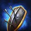

2018-03-06 Rework Diffs
Looking for an overview of changes from a recent hero rework? You've found the place. Green stuff is new, red has been removed. Refer to the Legend below for specifics on box and line highlights.
Legend
-
New
This talent is all shiny and new, and completely green in color -
Changed
UpdatedThe green highlights indicate the new descriptionWhile the red highlights show what the description used to say -
Moved
Moved from level XThis talent has been moved levels; it will have a blue label describing the move.Will generally be followed by a red section listing the old description too -
Unchanged
These white boxes are exactly as they were before; nothing changed here -
Removed
This removed talent is entirely red and sad because it no longer exists for this hero :(
Ana
Developer Comment: While Ana's current win-rate is sitting above most other Healers, and North of 50%, we have made some changes to make her feel more meaningful in solo-Support compositions. Along with the addition to self- sustain through Shrike, we also took the opportunity to do some Talent balancing as well. While there are no major outliers in terms of win-rate, she definitely has some Talents that are overshadowing others in terms of pick- rates. We have tried to address the majority of these to hopefully open up some new strategic choices for Ana players. We really enjoyed the changes internally, and we're excited to see what players can do with them.
Abilities
-
Healing Dart
UpdatedMana: 15 Cooldown: 2Fire a dart which heals the first allied Hero hit for 215 237 (+4% per level) Health. -
Biotic Grenade
UpdatedMana: 50 Cooldown: 16Toss a Grenade at the target area. Allied Heroes hit are healed for 166 (+4% per level) Health and receive 25% increased healing from Ana for 4 seconds. Enemies hit take 60 (+4% per level) damage and receive 100% less healing for 2 seconds.Range reduced from 15 to 12 -
Sleep Dart
Mana: 50 Cooldown: 14Fire a dart that puts the first enemy Hero hit to Sleep, rendering them unable to act for 3 seconds. Sleep's effects end instantly if the target takes damage after the first 0.5 seconds. Cannot be used on Vehicles. -
Eye of Horus
UpdatedMana: 45 75 Cooldown: 45 60Assume a sniping position, gaining the ability to fire up to 6 8 specialized rounds with unlimited range. Rounds hit the first allied or enemy Hero or enemy Structure in their path. Allies are healed for 285 (+4% per level) and enemies are damaged for 166 (+4% per level). Deals 50% less damage to Structures. Ana is unable to move while Eye of Horus is active. -
Nano Boost
UpdatedMana: 60 40 Cooldown: 60 50Instantly boost an allied Hero, restoring 200 Mana. For the next 8 seconds, they gain 30% Spell Power and their Basic Ability cooldowns recharge 150% faster. Cannot be used on Ana. -
Shrike
UpdatedBasic Attacks apply a Dose to non-Structure enemies, dealing an additional 44 (+4% per level) damage over 5 seconds, and stacking up to 5 times. Every 0.5 seconds, Ana is healed for 50% of the damage dealt to Heroes by Shrike.
Talents
1
-
Detachable Box Magazine
UpdatedQuest: Stack 5 Doses on an enemy Hero. Reward: After reaching maximum Dosage 5 times, Shrike also heals for the damage it deals to all enemies Doses deal 50% increase damage to enemies with 5 Doses. Reward: After reaching maximum Dosage 15 times, unlock the Active Reload Ability, which can be activated to instantly gain 3 charges of Healing Dart. -
Grenade Calibration
UpdatedQuest: Hit enemy Heroes with Biotic Grenade. Reward: After hitting 10 Heroes, Biotic Grenade does 75% more damage per allied and enemy Hero hit. Reward: After hitting 20 Heroes, Biotic Grenade's duration on allies is increased from 4 seconds to 12 seconds, its healing radius is increased by 100%, and its healing amplification applies to all sources. -
Piercing Darts
UpdatedQuest: Hit Heroes with Sleep Dart. Reward: After hitting 10 Heroes, Sleep Dart now hits 2 Heroes and its range is increased by 25% 50%. Reward: After hitting 20 Heroes, Healing Dart now hits 2 Heroes and its range is increased by 25% 50%.
4
-
Aim Down Sights
UpdatedShrike can be activated to increase vision radius by 100% and Basic Attack range by 2 but reduce Movement Speed by 20%. Lasts until canceled. Shrike activation cooldown reduced from 10 to 3 seconds -
Air Strike
UpdatedActivate to use Biotic Grenade with a 275% 200% increased range, but Grenades thrown this way take 3 4 seconds to land. Passive: Reduce Biotic Grenade cooldown by 4 seconds. -
Overdose
Hitting enemies with Sleep Dart applies 3 Doses.
7
-
Debilitating Dart
UpdatedCooldown: 20 45Activate to fire a dart which reduces the damage dealt by the first enemy Hero it hits by 50% for 4 seconds. -
Mind-Numbing Agent
UpdatedEvery Dose a Hero has reduces their Spell Power by 10% 15%. -
Temporary Blindness
After Sleep Dart's effects wear off, targets are Blinded for 2 seconds.
10
-
Eye of Horus
UpdatedCooldown: 45 60Assume a sniping position, gaining the ability to fire up to 6 8 specialized rounds with unlimited range. Rounds hit the first allied or enemy Hero or enemy Structure in their path. Allies are healed for 285 (+4% per level) and enemies are damaged for 166 (+4% per level). Deals 50% less damage to Structures. Ana is unable to move while Eye of Horus is active. -
Nano Boost
UpdatedCooldown: 60 50Instantly boost an allied Hero, restoring 200 Mana. For the next 8 seconds, they gain 30% Spell Power and their Basic Ability cooldowns recharge 150% faster. Cannot be used on Ana.
13
-
Purifying Darts
Healing Dart removes Roots and Slows from the target, and heals for 20% more when doing so. -
Smelling Salts
Healing Dart removes Stuns from the target, and grants them 50 Armor for 2 seconds when doing so. -
Speed Serum
Healing Dart grants 25% Movement Speed to affected Heroes for 2 seconds.
16
-
Concentrated Doses
Increase Healing Dart's healing by 10% for each Dose active on enemy Heroes. -
Contact Healing
Biotic Grenade heals for 30% more per allied and enemy Hero hit. -
Sharpshooter
Healing Dart's healing is increased by 5% each time it heals a Hero, up to 50%. This bonus is reset if Healing Dart fails to hit a Hero.
20
-
Ballistic Advantage
Eye of Horus rounds explodes upon impact, healing nearby allies for 300 (+4% per level) and dealing 150 (+4% per level) damage to nearby enemy Heroes. -
Custom Optics
Increase the Aim Down Sights Basic Attack range bonus from 2 to 4. -

Dynamic Shooting
Basic Attacks increase Attack Speed by 10% for 4 seconds, up to 100%. -
Nano Infusion
Allies affected by Nano Boost heal for 50% of Spell Damage dealt. -
Somnolent Doses
Upon stacking 5 Doses, Heroes are put to Sleep for 2 seconds.
Medivh
Developer Comment: When looking at updating Medivh, we recognized his reputation as a challenging Hero who excels in the right hands. We absolutely love this about the Hero, and wanted to add even more opportunities for players to show off their skills while simultaneously reducing some of the frustration players can experience when playing against Medivh. To accomplish our goal of amping up the more fun and challenging aspects of the Hero, we are making a modified version of the Master's Touch talent a baseline quest for Medivh, and adding a version of the Reabsorption talent into Force of Will. On the other hand, in order to combat some of the frustrations experienced when playing against Medivh, we are reducing the overall uptime on both Force of Will and Portal. We think these changes, in combination with several exciting new talents, will allow enemies to effectively play around Medivh, while also rewarding those players who time clutch Force of Wills and land massive amounts of Arcane Rifts.
- Health scaling increased from 4% to 4.5% per level
- Health Regeneration scaling increased from 4% to 4.5% per level
Abilities
-
Arcane Rift
UpdatedMana: 50 Cooldown: 7Launch a rift that deals 170 200 (+4% per level) damage to enemies in its path. If an enemy Hero is hit, reduce its cooldown by 5 seconds and refund 50 Mana. Quest: Hit 40 enemy Heroes with Arcane Rift without dying. Reward: Permanently increase the damage dealt by 75 and cooldown reduction for hitting a Hero by 1 second. -

Force of Will
UpdatedMana: 60 50 Cooldown: 8 5Protect an allied Hero from all damage for 1.5 seconds. Upon expiration, Force of Will heals the target for 20% of the damage it absorbed. -
Portal
UpdatedMana: 65 75 Cooldown: 16 20Create a set of portals between Medivh and the target location, allowing allies to teleport between both. The portals last 6 seconds. -
Poly Bomb
Mana: 75 Cooldown: 40Polymorph an enemy Hero for 2 seconds, Silencing them and making them unable to attack. On expiration, Poly Bomb spreads to other nearby enemy Heroes. -
Ley Line Seal
Mana: 75 Cooldown: 80After 0.5 seconds, unleash a wave of energy that places enemy Heroes in Time Stop for 3 seconds. -
Raven Form
Instead of mounting, Medivh can transform into a raven, increasing Movement Speed by 20%. While transformed, Medivh can see and fly over all terrain and is immune to all effects.
Talents
1
-
Portal Mastery
UpdatedMedivh can manually place both Portal locations and it no longer breaks Raven Form. Activate Medivh's Trait to cancel an unlinked Portal. -
Raven's Intellect
UpdatedRaven Form increases Medivh's Mana and Health Regeneration by 75% Mana Regeneration by 100%. -
Winds of Celerity
Moved from level 13Increases Raven Form's Movement Speed bonus by 50%.
4
-
Dust of Appearance
UpdatedCooldown: 45Activate to greatly increase sight range for 5 seconds and reveal enemy Heroes in the area for 8 10 seconds. Does not cancel Raven Form. Passive: Increase Medivh's sight range while in Raven Form by 25%. -
Mage Armor
UpdatedThe first time an ally uses a Portal, they gain 25 Armor for 4 seconds, reducing their damage taken by 25% 50 Physical Armor against the next 3 enemy Heroic Basic Attacks for 5 seconds. -
Raven Familiar
Moved from level 7A Raven Familiar joins allies each time they use a Portal. The Raven will dive at the ally's next Basic Attack against a Hero within 5 seconds, dealing 114 (+4% per level) damage and Slowing them by 30% for 2.5 seconds. -
Bird's Eye View
Cooldown: 30Permanently increase Raven Form's vision range by 25%. Activate to increase this bonus to 200% for 5 seconds.
7
-
Arcane Explosion
UpdatedWhen Force of Will expires, it deals 90 (+4% per level) damage to nearby enemies, plus 100% of the damage it prevented, up to 365 (+4% per level) additional damage.The first time Force of Will absorbs damage, it deals 183 (+4% per level) damage to nearby enemies. -
Force of Magic
Preventing at least 268 (+4% per level) damage with a single cast of Force of Will grants 20% Spell Power for 12 seconds. Stacks up to 2 times. -
Mystic Assault
If Arcane Rift hits an enemy Hero, Medivh's next Basic Attack within 6 seconds deals 40% more damage and heals for 40% of the damage dealt. -
The Master's Touch
Quest: Hit 30 enemy Heroes with Arcane Rift without dying. Reward: Permanently increases the damage dealt by 75 and cooldown reduction for hitting a Hero by 1 second.
10
-
Ley Line Seal
Cooldown: 80After 0.5 seconds, unleash a wave of energy that places enemy Heroes in Time Stop for 3 seconds. -
Poly Bomb
Cooldown: 40Polymorph an enemy Hero for 2 seconds, Silencing them and making them unable to attack. On expiration, Poly Bomb spreads to other nearby enemy Heroes.
13
-
Circle of Protection
Moved from level 16An untalented Force of Will also applies to allies near the target.Radius increased from 2.5 to 3 -
Enduring Will
Moved from level 16Preventing at least 268 (+4% per level) damage with Force of Will reduces its cooldown to 3 seconds.Increases Force of Will duration by 33%. -
Reabsorption
Moved from level 16Increase the amount of healing from Force Of Will to 50% of the damage it absorbed.Upon expiration, Force of Will heals the target for 50% of the damage it absorbed. -
Astral Projection
Increases Portal cast range by 50%. -
Quickening
Reduces Portal cooldown by 50%.
16
-
Arcane Charge
Moved from level 7When Arcane Rift damages an enemy Hero, the next Arcane Rift deals 15% 30% more damage. -
Stable Portal
Moved from level 1Decrease Portal cooldown by 25% and increase Portal duration by 50%. -
Temporal Flux
Basic Attacks reduce Medivh's Heroic Ability cooldown by 1 second. Each enemy Hero hit by Arcane Rift reduces Medivh's Heroic Ability cooldown by 3 seconds.
20
-
Arcane Brilliance
Cooldown: 60Activate to instantly restore 200 mana to all nearby allied Heroes and grant them 10% Spell Power for 10 seconds. -
Dust of Disappearance
Cooldown: 10Stealth an allied Hero for 20 seconds. Remaining stationary for at least 1.5 seconds while Stealthed grants Invisible. Stores up to 2 charges. -
Glyph Of Poly Bomb
Poly Bomb explodes 1 second sooner and the spread radius is increased by 25%. -
Guardian of Tirisfal
Minions and Catapults hit by Arcane Rift are instantly killed. -
Medivh Cheats!
Increase the duration of the Time Stop by 33% and gain the ability to redirect the wave once while it's active. -
Invisibility
Cooldown: 10Stealth an allied Hero for 20 seconds. Stores up to 2 charges.
Sonya
Developer Comment: For Sonya, we love her core gameplay but have noticed that there is very little wiggle room in what's generally considered her default talent path. To combat this, we are opening up more survivability options so players don't feel pressured into always taking Nerves of Steel and Ignore Pain. We are also adding a couple of fun new tools into her arsenal, including more disruption options for Ancient Spear and a number of new talents for Seismic Slam that place more focus on area-of-effect damage. As an example, the Shattered Ground talent now also increases the splash range of Seismic Slam, allowing some interesting opportunities for poking opponents in lane, or dishing out tons of damage in a teamfight.
Abilities
-
Ancient Spear
Cooldown: 13Throw out a spear that pulls you to the first enemy hit, dealing 173 (+4% per level) damage and briefly stunning them. If this hits an enemy, generate 40 Fury. -
Seismic Slam
Mana: 25 Cooldown: 1Deals 176 (+4% per level) damage to the target enemy, and 44 (+4% per level) to enemies behind the target. -
Whirlwind
Mana: 40 Cooldown: 5Deals 441 (+4% per level) damage to nearby enemies over 3 seconds, and heals for 25% of damage dealt. Healing tripled versus Heroes. -
Leap
Cooldown: 70Leap into the air, dealing 135 (+4% per level) damage to nearby enemies, and stunning them for 1.25 seconds. -
Wrath of the Berserker
Cooldown: 60Increase damage dealt by 40%. Reduce the duration of Stuns, Roots, and Slows against Sonya by 50%. Lasts 15 seconds, and extends by 1 second for every 10 Fury gained. -
Fury
Use Fury instead of Mana, which is gained by taking or dealing damage. Using a Basic or Heroic Ability grants 10% Movement Speed for 4 seconds.
Talents
1
-
Furious Blow
Moved from level 16Every 4th cast of Seismic Slam deals 40% more damage to the primary target and costs no Fury.Increases Seismic Slam damage by 50%, but costs 40 Fury. -

Tough As Nails
Every 16 seconds, gain 60 Physical Armor against the next enemy Hero Basic Attack, reducing the damage taken by 60%. Stores up to 3 charges. Charges refresh 200% faster while Fury's Movement Speed bonus is active. -

War Paint
Sonya's Basic Attacks heal for 30% of the damage dealt. -
Block
Every 5 seconds, gain 75 Physical Armor against the next enemy Hero Basic Attack, reducing the damage taken by 75%. Stores up to 2 charges. -
Shot of Fury
Cooldown: 45Increases maximum Fury by 50. Sonya's Trait can be activated to gain 50 Fury. Usable while Whirlwinding.
4
-
Battle Rage
Cooldown: 30Activate to instantly restore 10% of Sonya's maximum Health. Stores up to 3 charges. Passive: Sonya deals 25% more damage to Mercenaries. -
Hurricane
Reduce the cooldown of Whirlwind by 1 second. Casting Whirlwind removes all Slows and Roots from Sonya. -
Shattered Ground
UpdatedIncrease the length of Seismic Slam's splash by 66% and increase its splash damage to 75% of its base damage. -

Focused Attack
Every 10 seconds, your next Basic Attack against a Hero deals 60% additional damage. Basic Attacks reduce this cooldown by 1 second. -
Mercenary Lord
Friendly non-Boss Mercenaries near your Hero deal 50% more damage. Gain 50 Armor against Minions and Mercenaries, reducing the damage taken by 50%.
7
-
Life Funnel
Moved from level 13Increases the healing of Whirlwind to 35% of damage dealt. -
Poisoned Spear
Ancient Spear deals an additional 100% damage over 6 seconds. -
Shot Of Fury
Cooldown: 40Activate to gain 50 Fury. Usable while Whirlwinding. Passive: After casting Seismic Slam, your next Basic Attack deals 40% more damage. -
Ferocious Healing
Cooldown: 10Consume 20 Fury to heal 10% of Sonya's maximum Health. Usable while Whirlwinding. -
Follow Through
After using an Ability, your next Basic Attack within 6 seconds deals 40% additional damage.
10
-
Leap
Cooldown: 70Leap into the air, dealing 135 (+4% per level) damage to nearby enemies, and stunning them for 1.25 seconds. -
Wrath of the Berserker
Cooldown: 60Increase damage dealt by 40%. Reduce the duration of Stuns, Roots, and Slows against Sonya by 50%. Lasts 15 seconds, and extends by 1 second for every 10 Fury gained.
13
-
Mystical Spear
Reduces the cooldown of Ancient Spear by 3 seconds. Ancient Spear always pulls Sonya to the target location even if it doesn't hit an enemy. -
No Escape
Moved from level 16Increases the Movement Speed bonus from using Basic and Heroic Abilities to 20% 25%. -
Ruthless
Whirlwind deals an additional 50 (+4% per level) damage per second to Heroes below 33% Health. Does not generate additional healing. -
Aftershock
Using Seismic Slam reduces its Fury cost by 50% for 2 seconds. -

Spell Shield
Every 30 seconds, gain 50 Spell Armor against the next enemy Ability and subsequent Abilities for 1.5 seconds, reducing the damage taken by 50%. Can be toggled to allow or prevent this talent from triggering automatically.
16
-
Giant Slammer
Seismic Slam deals an additional 2% of Heroes' maximum Health as damage. -
Nerves of Steel
Cooldown: 60Activate to gain 25% of your maximum Health as a Shield for 3 seconds. Usable while Whirlwinding. -
Rampage
Increase Basic Attack damage by 25%. Basic Attacks reduce the cooldown of Ancient Spear by 0.75 seconds. -
Imposing Presence
Cooldown: 20Activate to slow the Attack Speed by 50% and Movement Speed by 20% of nearby Heroes and Summons for 2.5 seconds. Passive: Heroes and Summons that attack your Hero have their Attack Speed slowed by 20% for 2.5 seconds.
20
-
Arreat Crater
Leap leaves behind an impassable crater for 5 seconds. Reduces Leap's cooldown by 20 seconds. -
Composite Spear
Moved from level 7Increases Ancient Spear's range by 50% 30%. Hitting an enemy Hero with Ancient Spear grants 25 Armor for 4 seconds increases Fury generated by 20. -
Ignore Pain
UpdatedCooldown: 60Activate to gain 60 75 Armor for 4 seconds, taking 60% 75% less damage. Usable while Whirlwinding. -
Striding Giant
Wrath of the Berserker increases maximum Health by 10% and grants Striding Giant, which can be activated to become Unstoppable for 2 seconds. 30 second cooldown. -
Anger Management
Increases all Fury generated during Wrath of the Berserker by 100%. -

Nexus Blades
Basic Attacks deal 20% more damage and Slow enemy Movement Speed by 20% for 1 second.